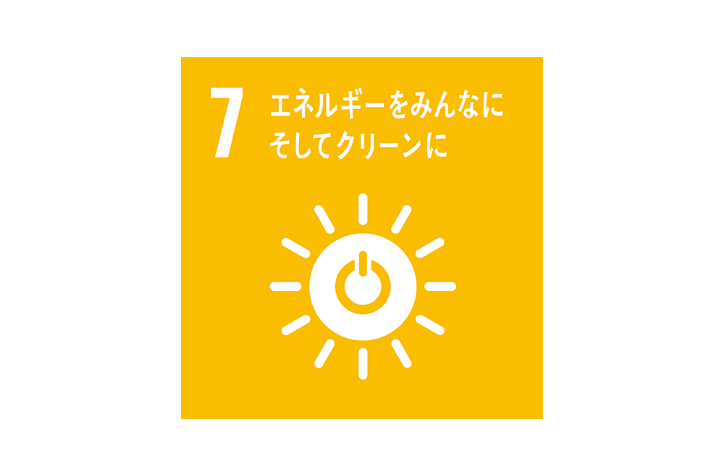

出来ると便利！？簡単節約術！！
まず前提として、電気を無駄につかってしまった製品を同じ大学生約100名にアンケートした所、照明が75％、エアコン57％無駄遣いしていると回答。
そのためこの記事では照明、エアコンの電力削減に関するお得な情報を掲載します。
～エアコン編～
Point➀
- 夏の冷房時の室温は28℃を目安に
- 冬の暖房時の室温は20℃を目安に
- 夏の場合、外室気温を31℃の時、エアコンの設定温度を27℃から28℃にしたとき（使用時間9時間）
- 年間で電気30．24kwhの省エネ 約670円の節約に
- 冬の場合、外室気温6℃の時、エアコンの設定温度を21℃から20℃にしたとき（使用時間9時間）
- 年間で電気53．08kwhの省エネ 約1170円の節約になります。
Point➁
- 冷房と暖房は必要な時だけつける。
- 冷房を1時間短縮した場合（設定温度28℃）
- 年間で電気18．78kwhの省エネ 約410円の節約に
- 暖房を1時間短縮した場合（設定温度20℃）
- 年間で電気40．73kwhの省エネ 約900円の節約になります。
Point➂
- フィルターを月に1回か2回清掃。
- フィルターが目詰まりしているエアコンとフィルターを清掃した場合、
- 年間で31．95kwh の省エネ 約700円の節約。
- ちょっとした気遣いでこれだけのお金を節約出来ます。特に冬の方が多く節約を出来るみたいなので寒いからといってエアコンを乱用しないようにしましょう。
- ～ワンポイント省エネレッスン～
- 快適空調のコツ
- 冷房時の工夫
- ・ドア、窓の開閉は少なく
- ・レースのカーテンやすだれなどで日差しをカット。
- ・外出時は、昼間でもカーテンを閉めると効果的。
- ・扇風機を併用。風がカラダにあたると涼しく感じます。
- ・ドア・窓の開閉は少なく
- ・厚手のカーテンを使用。床まで届く長いカーテンの効果的。
- ・扇風機を併用。暖まった空気を循環させましょう。
- 室外機の周りに物を置かない。
- 室外機は風通しの良い場所に設置しましょう。周囲をきちんと整理整頓を。